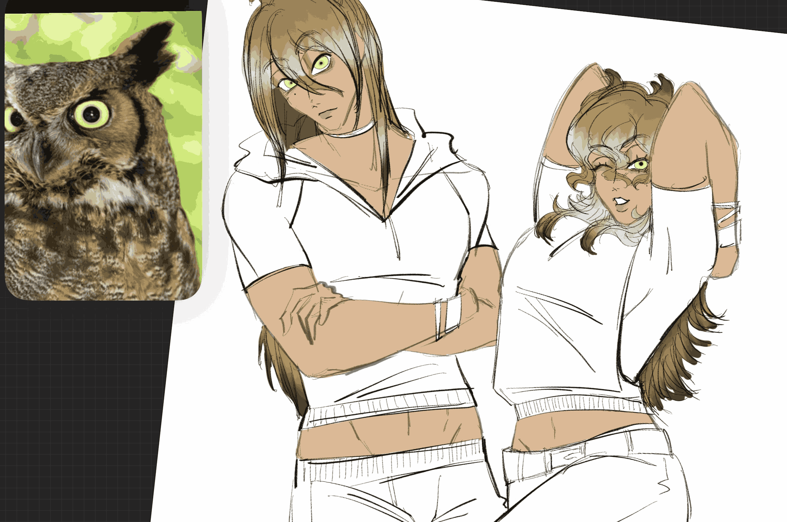

⊹₊˚‧︵‿₊୨ᰔ୧₊‿︵‧˚₊⊹
Character Creation ✧˖°
. ݁₊ ⊹ . ݁꒰ঌ· Getting started! ·໒꒱ ݁ . ⊹ ₊ ݁. •
Getting inspired to make a character can come from absolutely anything. There's thousands of OC-universes on the internet based around people's different interpretations of humanized food and countries, even sentient objects. I myself have made a character after thinking 'Oh, mint chocolate chip colours would be such a gorgeous colour palette on a mori-kei style girl.' And thus a character was born! Not every character has to be fully fleshed out with intricate backstories and relationships either. Whether it's a one-time thing to showcase a concept you wanted to bring to life, an outfit or you do want something complex to live out a story, all characters are amazing little expressions of creativity.
Something that many people get hung up over is worrying if their original characters and creations are actually truly original and to that I say probably not! Everything has been done before but the way in which you do it makes it unique. You want to do a fantasy world? Do it! Though fantasy has been done hundreds of times before, nobody will have ever done it quite like you. There's also no need for things to be seperate from every other media, as impossible as that is anyway, inspiration brings about more passion.
There's also the question of a 'Mary-Sue' and if it's acceptable to create one to insert it into an existing media or just to have for yourself and to that I say.. DO WHAT YOU WANT! Mary-Sue's are characters that are deemed as 'too overpowered' or given too many traits and perks such as all the other characters being in love with them or being a rare species.. Ect. Ect..! But truly none of it matters as if it brings you joy then that's all you need! Create that half-dragon, half-unicorn lost princess of the fae kingdom thought to have died to the great magic purge a thousand years ago but she actually survived and absorbed all the magic that everyone else lost..! Even ironically creating characters is fun.
WHERE do I get started?
For me personally, I like to start with a concept. I like taking an already existing trope - like the 'chuunibiyou' type where the character believes that they've got some powers or special knowledge about a secret organisation while everyone thinks that they're just delusional - and thinking of how I can make it my own. With the chuunibiyou trope, most characters in animes and medias think they're battling a secret organisation with their powers so I thought it'd be make someone who thinks that they're distantly related to some great ninja and wants to bring back the art of kunoichi into the modern world.
My process is:
- Find a concept or trope.
- Expand on it and what YOU think are the best parts of it.
- Search up some names that mean somehing relevant to the character or just name them whatever you'd like.

Whether in a Universe of their own or being inserting into a pre-existing media, note down their relevance in that world. Their past, connections with the characters - something I'll go more into depth in yumeshipping - and maybe even their future! I like to give my characters timelines where a few of them are the 'good ending' where everyone lives a happy little life or it's just the best outcome and work my way down from there into worse and worse 'ending' scenarios just because it's enjoyable to see what the different choices could lead to.